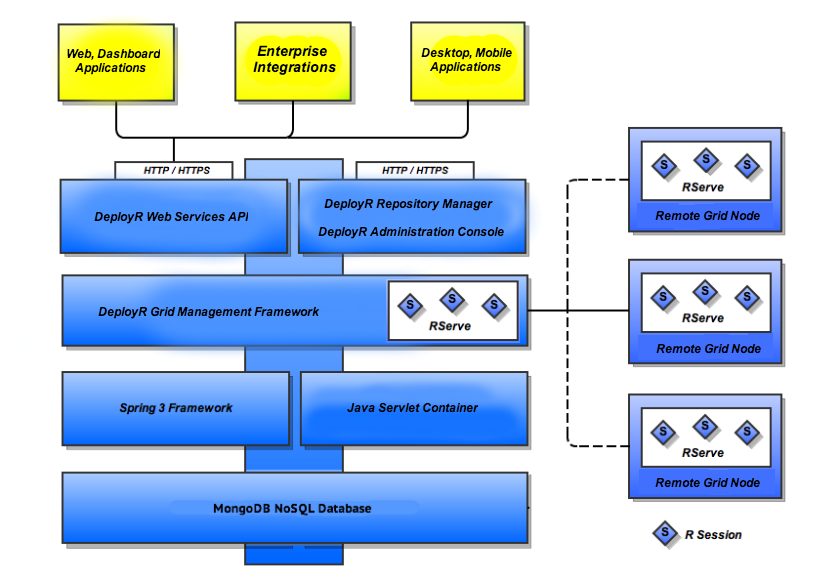

2 Web Service API Architecture - Reference Documentation
Authors: Microsoft Corporation
Version: 8.0.0
2 Web Service API Architecture
While it is not necessary to understand the internal architecture of the DeployR server in order to use this API the following overview is provided in order to lend context to server administrators intending to support the API and to client application developers intending to use the API.R User Web, Desktop, Mobile Apps
The R user web, desktop and mobile apps represent client applications built using the DeployR API. The API is a fully standardized Web services interface using JSON and XML over HTTP. This means that any piece of software that is both capable of connecting to the server and parsing either JSON or XML can become a client.To make life easier for the client developers using this API, DeployR also provides several client libraries. These client libraries, currently available for Java, JavaScript and .NET developers, simplify making calls, encoding data and handling response markup on the API.DeployR Public API
This document describes the DeployR Public API and the complete set of API services provided for users, projects, jobs, repository-managed files and scripts and the event stream. Using this API directly or by taking advantage of the DeployR client libraries developers can integrate R-based analytics into their client applications.DeployR Administration Console
The DeployR Administration Console is a browser-based administrators tool used to customize the deployment configuration for the server, tune server runtime behaviors, and facilitate the integration of client applications on the API. Please refer to the DeployR Administration Console Users Guide for further details.DeployR Grid Management Framework
The grid management framework provides load balancing capabilities for intensive R-compute environments. This framework manages a scalable network of collaborating nodes where each node on the grid contributes its own resources (processor, memory and disk). Each node can be leveraged by the server to execute R analyses on behalf of client applications.For further details, refer to section Managing the Grid in the DeployR Administration Console Users Guide.